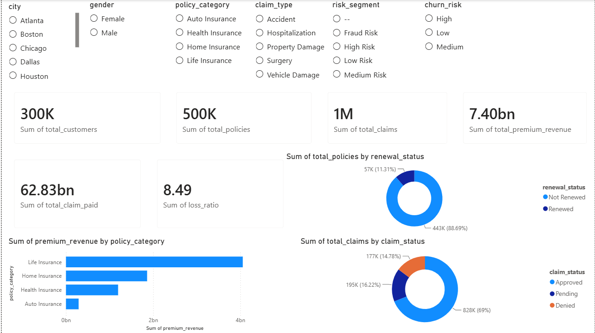
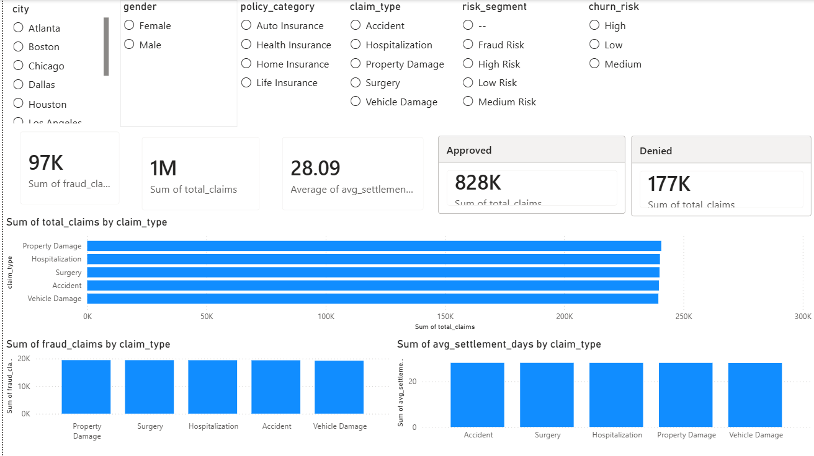
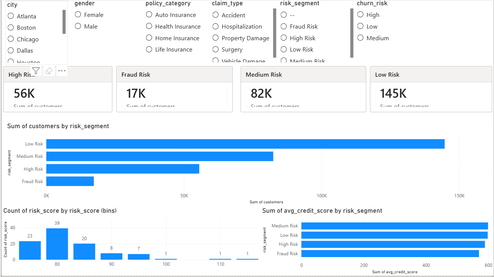
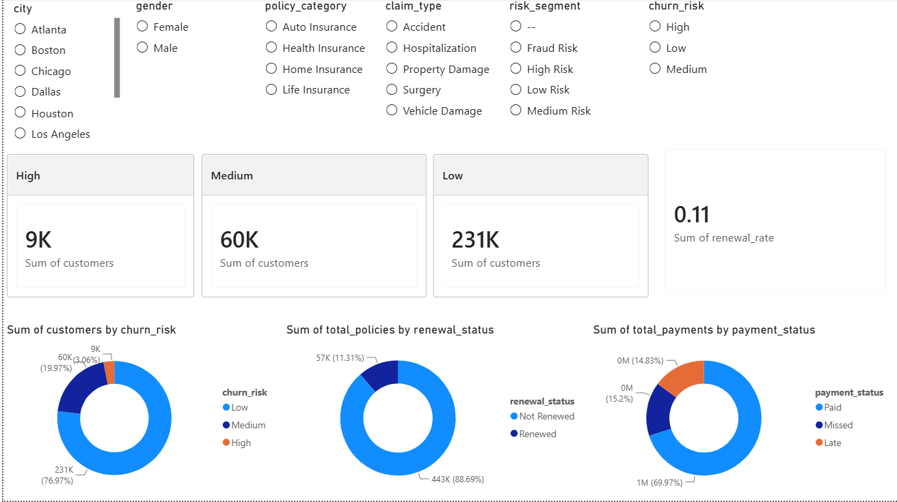
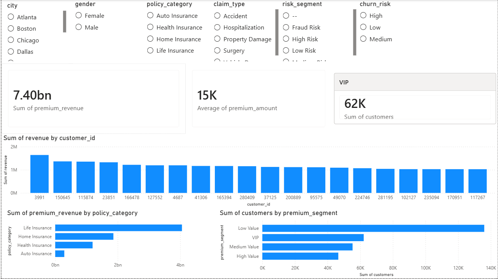
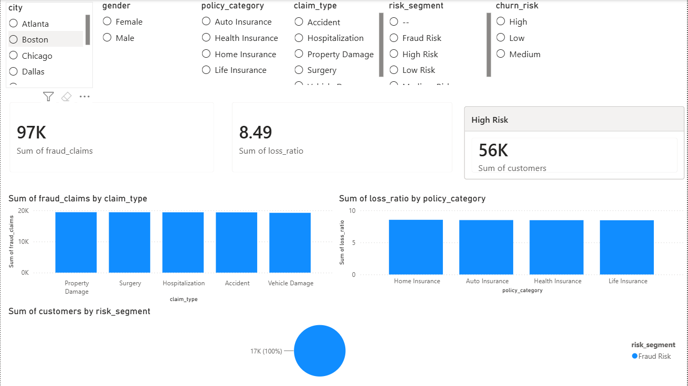

Insurance Claims,Fraud Risk & Customer Retension Analytics

Business Problem
Insurance companies struggle with:
- fraudulent claims
- delayed claim settlements
- policy cancellations
- low customer retention
- claim loss ratios
- premium leakage
Your project will solve these analytically.
Objectives
This project focuses on analyzing insurance customer behavior, claim patterns, fraud risk, premium performance, and customer retention.
The objective is to build an end-to-end analytics solution that helps insurance companies:
- reduce fraudulent claims
- improve claim settlement efficiency
- identify high-risk customers
- optimize premium revenue
- improve customer retention
Technology Used
Python
Pandas
Numpy
Matplotlib
Seaborn
SQL
Power BI
Tableau
Excel
Project Workflow
- Data generation & Collection
- Data Cleaning
- EDA
- Feature Engineering
- SQL Analysis, Data Modelling & Kpi Views
- Dashboard Creation(powerbi & Tableau)
Business KPIs
- Total Customers
- Total Premium Revenue
- Total Claims
- Fraud Rate
- Retention Rate
- Loss Ratio
- TOtal Policies
- Total Claim Paid
- Renewal Rate
Dashboard Preview




